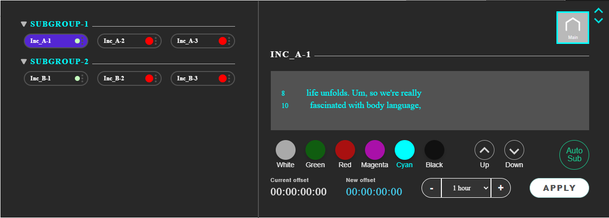
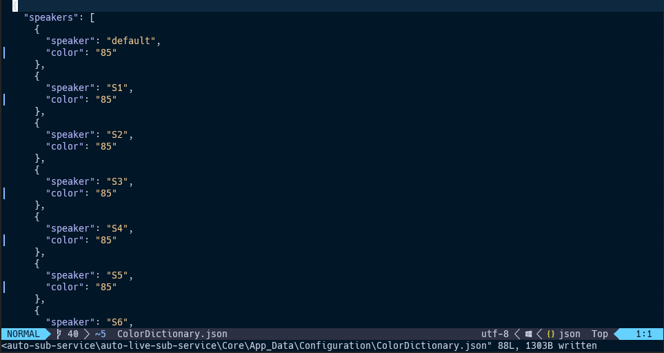
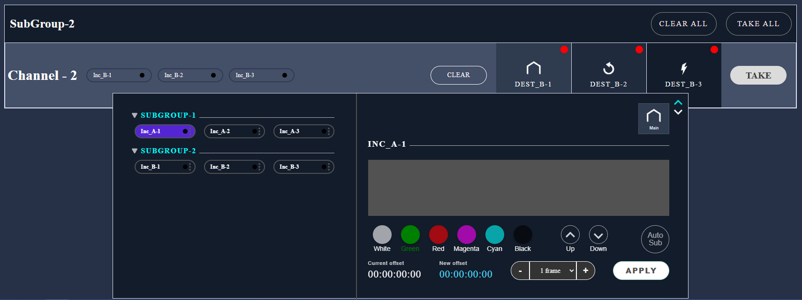
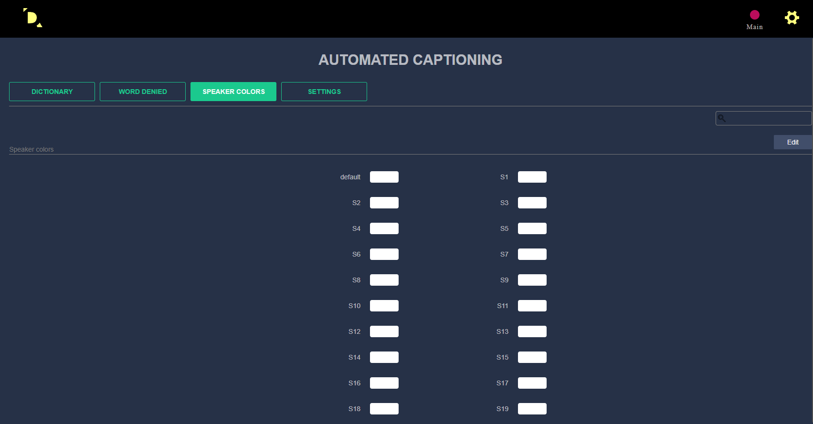
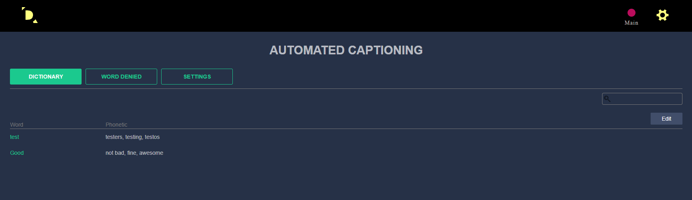
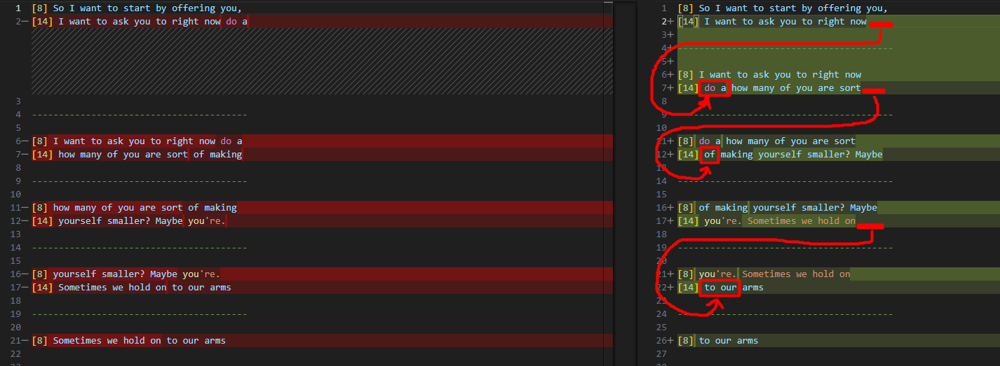
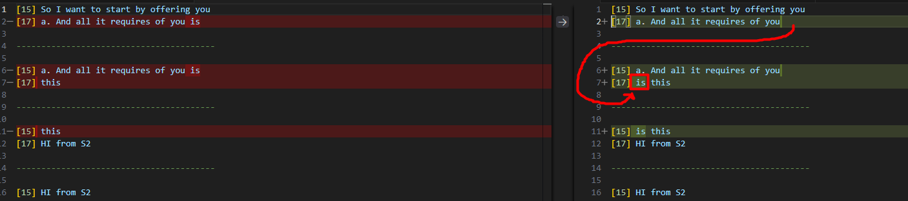
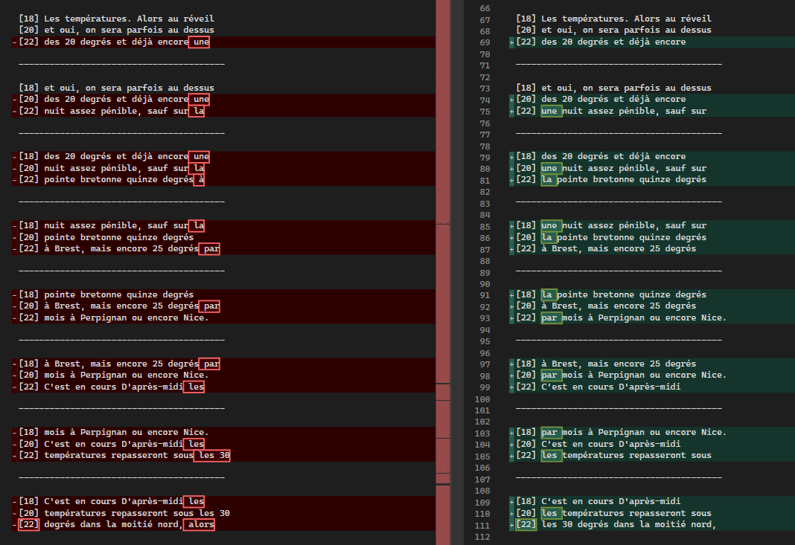

stl version v3.8.9.0
Date: 2024.11.27
Issues in Milestone
---
- #37 #datarouter Manage line from datarouter for autosub
- #40 #datarouter Manage the color dynamically in Datarouter and Autosub
- #44 #datarouter Remove all color management except for manual choice from Webpage
- #43 #autosub Set new line for new speaker
- #49 #autosub Change line completing mechanism to add check length of latest two words
Features
---
Manage line from datarouter for autosub
The design for working with the AutoSub color and line number parameters has been changed.
Added 6 buttons for selecting colors
1. White
2. Green
3. Red
4. Magenta
5. Cyan
6. Black
Two buttons for changing the line number. When changing lines up or down, only the first line number is taken into account. The shift occurs in increments of two lines.
The Auto-Sub button changes color to green when subtitles are actively broadcasting and to gray in standby mode. If the Auto-Sub option is unavailable, the "Offline" button in red is displayed instead of the Auto-Sub button.
Manage the color dynamically in Datarouter and Autosub
When we change the color in DataRouter we change the color for all `AutoSub` `Speaker Color`.
 Datarouter. Remove all color management except for manual choice from Webpage
Before:
After:
Autosub. Set new line for new speaker
If the transcription contains a new speaker - Move the word to a new line.

#autosub Change line completing mechanism to add check length of latest two words
When a line completed, we look at the last two words.
We call them `N-1` and `N`:
if N > 3, we do nothing.
If N <= 3, we look at N-1:
if N-1 > 2 : we move N word to the next line
if N-1 <= 2 : we move N-1 and N words to the next line


